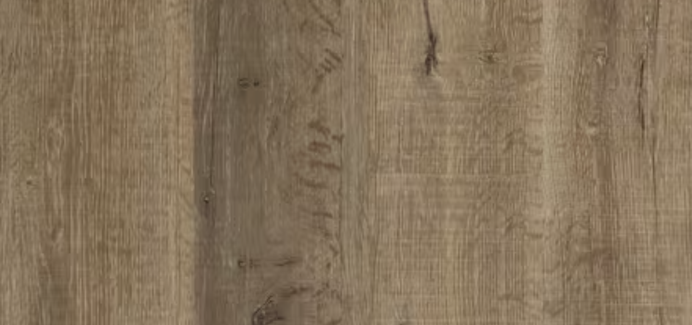
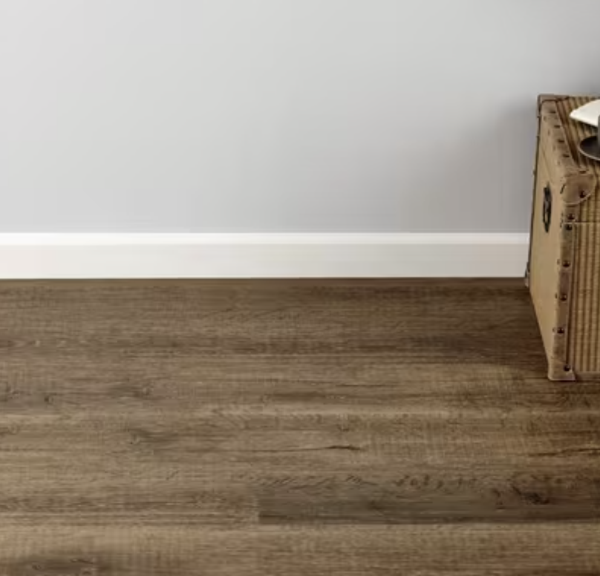
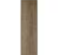

Luxury vinyl flooring is 100% waterproof and stands up to most anything life throws its way! 5mm DuraLux Performance Harvest Grove Rigid Core Luxury Vinyl Plank - Foam Back is a highly durable and waterproof flooring option that is suitable for any room in the house, including basements, sunrooms, and full bathrooms. Plus, its rigid stone-based core makes each plank dent-resistant and scratch-resistant, so DuraLux Performance is perfect for high-traffic areas.
- Install up to 6,400 square feetNo need for transition molding.
- You can install it right awayPre-installation acclimation is unnecessary.
- Attached foam underlayment makes for a quieter, warmer floor.
- Can be installed on, above, and below grade-level (perfect for basements!) and over most existing hard-surface flooring, including slightly irregular subfloors.
- This DuraLux Performance product is backed by a lifetime res./ 15 yr comm. warranty.
- It is recommended to use Sentinel Protect Plus Underlayment for optimal sound absorption and moisture resistance or a standard vapor barrier like 6mil PE Film.